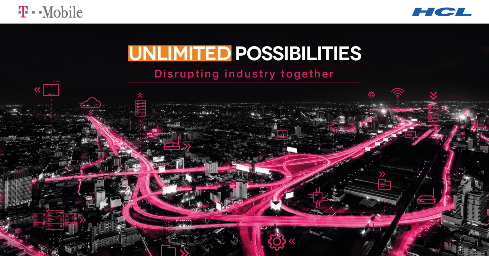

| BEYOND DIGITAL |
|
Digital transformation is re-imagining the organization, operations and ecosystem from a customer perspective using human centric design to execute tangible business outcomes
Discover, Design, Do: We have built repeatable frameworks embedded with design thinking process...read more |
| Design Thinking Driven Innovation |
|---|
| Design Thinking is a way of solving problems in a highly collaborative manner. HCL has a flexible, 6-step framework that can be executed upon by trained Design Thinking coaches who think like designers & use a toolkit based on Design Thinking, Business Thinking and Systems Thinking. The Design Thinking coach leads a multi-disciplinary team that collaborates tightly with clients. |
| Business Value | Tools | Subject Matter Expert |
|---|---|---|
| Enables enterprises to find new human meaning for technology and introduces new perspectives that lead to innovative solutions. |
|
Abhineet Sonkar
X

GopalanTechnical Architect in T-mobile automation project, developing and managing automation across functional areas like NGN, Core, DRTS and Transport |
| User Experience Transformation |
|---|
|
Standalone applications often result in frustrating experiences for the user - because they are not designed keeping the persona in mind. Smart micro-services led Orchestration layer transforms transactional experience into meaningful role-based user experience.To create an orchestration layer you need to have a seamless integration of Design, Technology & Operations. The following demo will take one such example of experience transformation for a fan who visits a music event and how her experiences change throughtout her journey. |
| Business Value | Tools | Subject Matter Expert |
|---|---|---|
| Enables enterprises to provide a rich role-based user experience that leads to much better customer engagement and satisfaction. |
|
Shubham Singhal
X
GopalanTechnical Architect in T-mobile automation project, developing and managing automation across functional areas like NGN, Core, DRTS and Transport |